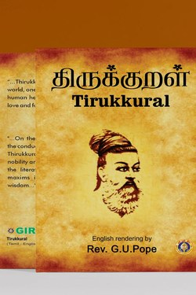

Library › Self-Improvement
Thirukkural — Summary & Key Lessons

1,330 couplets on virtue, wealth and love — a complete moral operating system in 38 chapters.
📖 OPEN THE FULL INTERACTIVE BREAKDOWN →🌐 Read it in Hindi, Hinglish, Gujarati, Tamil & 22 more languages — free, with audio.
💡 The Big Idea
Thirukkural (the 'sacred couplets') is 1,330 two-line verses in three books: Aram (virtue), Porul (wealth & politics) and Inbam (love). Its genius is compression and universality — no god, no ritual, just observable human ethics: hospitality, learning, truth, justice, friendship, patience. It is the rare text that is equally at home in a village school and a boardroom.
🧠 The 10 Key Lessons
Lesson 1: Virtue Is the Foundation
Book 1: Aram
The Kural's first book sets the order: right living comes before money and pleasure. Virtue here is practical, not pious — truthfulness, kindness, hospitality, self-control, gratitude. Its test is simple: would this action help another without harming a third? Values are not decorations; they are the load-bearing structure of a life.
📖 Example: The host who gives the best portion of the meal to the guest — the Kural treats generous hospitality as the first duty of a civilised person. Read the full example →
⚡ Do this: Choose one virtue (truth, kindness, gratitude) and make it the theme of your next seven days.
Lesson 2: Learning Is the Only Real Wealth
Book 1: Learning
The Kural ranks learning above land, gold and jewels: what you learn travels with you, cannot be stolen, and grows when shared. But knowledge without right living is dangerous — the learned person uses knowledge to lift others. The chapters on education are strikingly modern: learning is a process, not an event.
📖 Example: Two people inherit the same money; the one who invested in skills compounds it, the one who bought things burns it. Read the full example →
⚡ Do this: Invest one hour this week in a skill you can teach someone else — that doubling is the Kural's point.
Lesson 3: Self-Control Wins the Long Game
Book 1: Self-Control
Half the Kural's moral chapters are about governing appetite: anger, envy, alcohol, gossip, lust. The central argument is freedom — a person ruled by craving is a slave with a salary. Anger especially is attacked as self-inflicted fire. Control is not suppression; it is choosing the response, moment to moment.
📖 Example: A single angry email costs a partnership; the person who answers tomorrow morning keeps both the deal and the peace. Read the full example →
⚡ Do this: Install a one-day rule on anger: never send the angry message the same hour it is written.
Lesson 4: Wealth Must Be Earned Clean
Book 2: Porul
The second book turns to worldly life: agriculture, trade, government, justice. Wealth is good but must be earned without sin and spent without waste. The king's duty is justice without delay; the merchant's duty is honesty. On friendship, the Kural is precise: test slowly, keep the tested, and never sell a friend for advantage.
📖 Example: A business that undercuts quality to win the quarter wins the quarter and loses the decade. Read the full example →
⚡ Do this: Check one earning stream: is it clean, and is it building something that outlasts the money?
Lesson 5: Love Is Discipline Too
Book 3: Inbam
The third book — on love — treats affection as a moral practice, not a feeling: faithfulness, patience, refinement. In a text so severe, the love chapters sing; even romance must be conducted with integrity. The Kural's full arc: virtue for the self, wealth for the family, love (inbam) as the reward of a life lived rightly.
📖 Example: The most impressive marriages in any family are usually the ones where small kindnesses were routine for decades. Read the full example →
⚡ Do this: One deliberate act of love or appreciation today — no occasion required.
Lesson 6: Friendship: The Kural's Medicine
The Wealth of Friendship (Kural 71-80)
The Kural's sections on friendship are among its wisest: true friendship is rare, is tested by adversity, and thrives between equals who correct each other — a friend is the medicine for every disease, and a fair-weather friend is no friend at all. The Kural is brutally honest: avoid the friend who flatters and the alliance that only profit holds.
📖 Example: The Kural compares real friendship to a medicine that works even against the friend's own anger — a friend corrects you privately and stands with you publicly. Read the full example →
⚡ Do this: Be the correcting friend: this week, tell one person honestly what they need to hear — kindly, privately, once.
Lesson 7: The King's Duty: The People Are the Wealth
The Royalty (Kural 51-60, 381-400)
The Kural's politics are radically people-centred: the king exists for the people; a kingdom's prosperity is measured by its farmers' happiness, and the king who oppresses his people destroys himself. The famous agricultural line — the world depends on farmers, and farmers depend on rain — grounds all wealth in the base of the pyramid.
📖 Example: A ruler who taxes the poor to build monuments is, in the Kural's eyes, already dead — the kingdom dies before the throne falls. Read the full example →
⚡ Do this: Honour the base of your own world: thank, pay fairly or support the people whose work enables yours.
Lesson 8: Sweet Speech Is the First Gift
Chapter 20: The Benefit of Speaking Sweetly
Valluvar's Iniyavai Koottal is radical: words are the cheapest gift and the most powerful. Sweet speech does not mean flattery — it means truth delivered with warmth rather than acid. A single harsh sentence can erase years of goodwill, while careful words can repair almost anything. The Kural's advice to princes and parents alike: let your words be the first service you offer anyone.
📖 Example: A manager who must reject a proposal keeps the person whole: acknowledge the effort, state the reason plainly, end with belief in them — the message lands, the relationship survives. Read the full example →
⚡ Do this: Today, deliver one hard truth wrapped in genuine warmth. Notice who thanks you for it.
Lesson 9: The Guard of Shame
Chapter 82: The Fear of Dishonour
The Kural holds that the man who fears disgrace more than pain builds a wall no temptation can climb. This 'guard of shame' is not vanity; it is a deeply practical compass — when reputation costs more than the shortcut, the shortcut dies. Valluvar's insight: character is mostly a matter of what you are unwilling to do, decided in advance, before the price is offered.
📖 Example: The student who refuses to copy because being caught would disgrace his family name is not weaker — he is cheaper to never bribe. Read the full example →
⚡ Do this: Write your one non-negotiable line (the thing you will never do, whatever the price). Decide it now, not in the moment.
Lesson 10: The Guest Is God: Generosity Done Right
Chapter 9: Hospitality
Valluvar ranks hospitality with the highest virtues: the man who shares his meal with a guest has performed a sacrifice. But his wisdom is also discriminating — generosity is not blind dumping; giving to the worthy, at the right moment, is the real art. The Kural's test: hospitality is measured not by the size of the gift but by the warmth in the giving.
📖 Example: Two hosts: one offers a feast with a sigh, another offers rice with joy — the Kural says the second is the richer. Read the full example →
⚡ Do this: The next person who asks for your time or help: give the first hour fully, no negotiation, no complaint.
✅ 5-Step Action Plan
- Pick one virtue and live it loudly for a week.
- Give one hour weekly to a skill you can teach.
- Institute the one-day rule on angry communications.
- Audit your income for cleanliness and durability.
- End each day with one line: what I aimed for, what I did, what I learned.
⚠️ When This Doesn't Work
Some translators render the Kural through religious lenses, and certain chapters on kingship and caste-era norms are dated. Read it as human ethics; the language of a 1,500-year-old text always needs translation of context.
💀 The Graveyard Proves It
👑 Dasharatha — The King Destroyed by His Own Promise. Burn: His son exiled, his kingdom grieving, his own death from a broken heart Read the full case study →
💬 Best Quotes from Thirukkural
- “All beings are born equal — the differences of birth are accidents of circumstance.”
- “The great are those who do the difficult thing that ordinary people avoid.”
- “The true home is where love and virtue dwell.”
Interactive version: mark lessons as read, listen in your language, share quote cards.